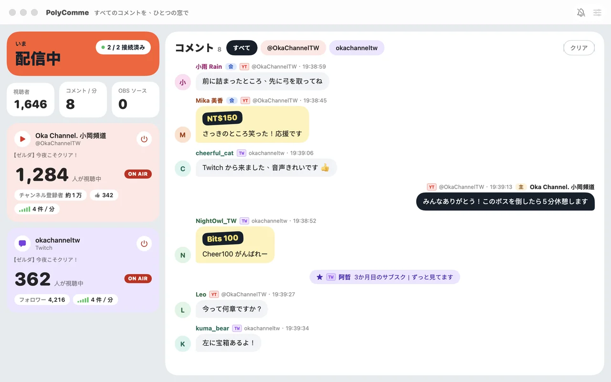
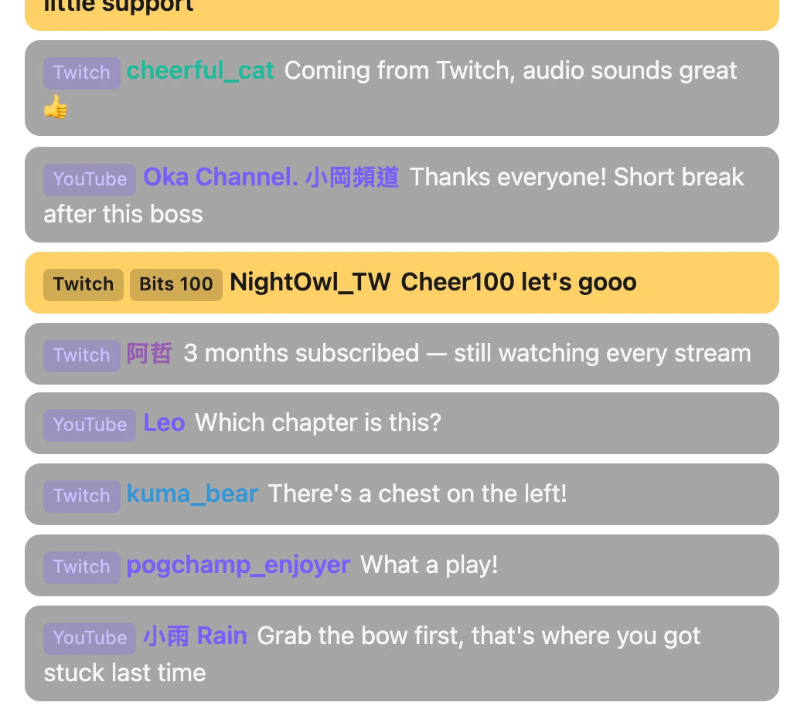
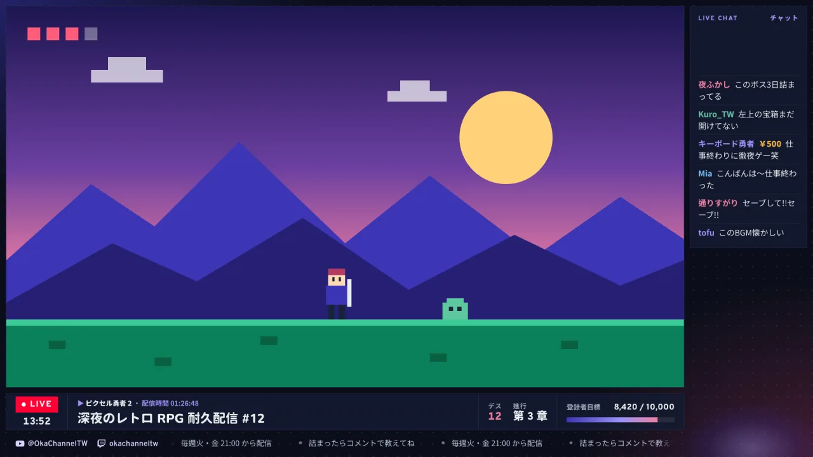
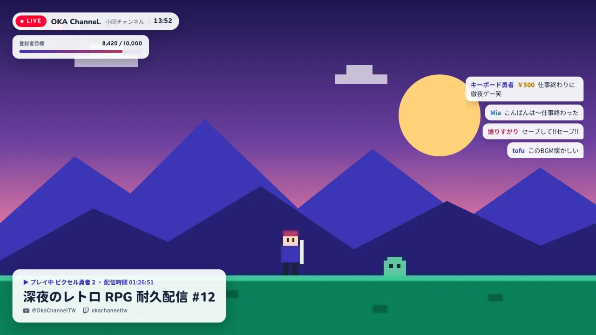
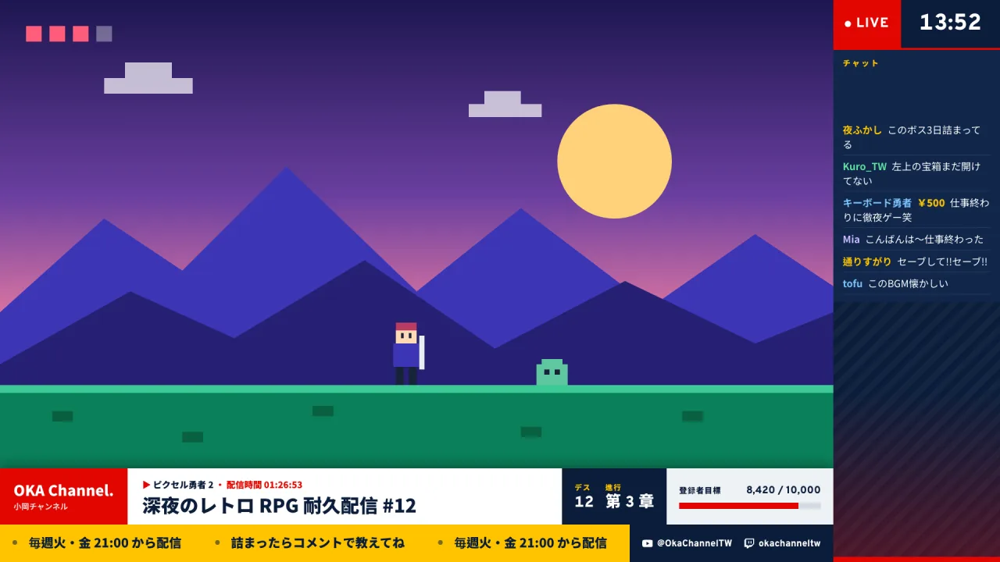
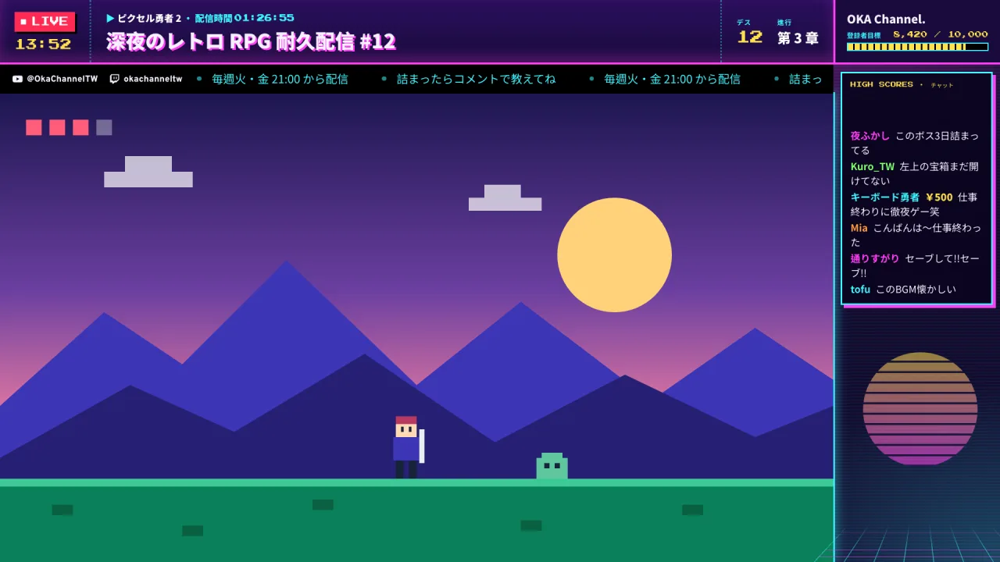
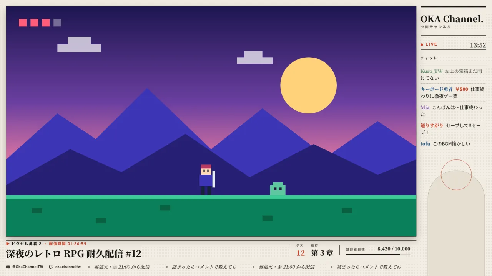
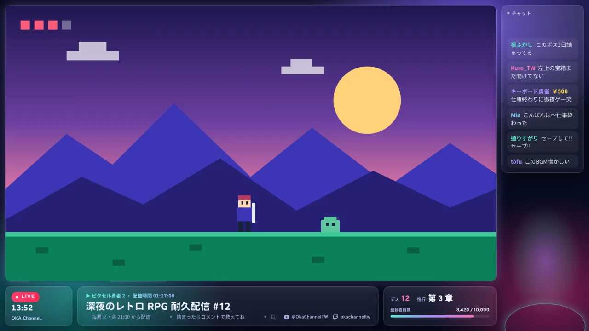

いま
すべてのコメントを、
ひとつの窓で。
YouTube と Twitch で同時に配信していますか？PolyComme は両方のコメントをひとつの流れにまとめます。あなたはパソコンのひとつのウィンドウで全部読めて、視聴者は OBS の画面で同じコメントを見られます。API キーもログインも不要、開けばすぐ使えます。
初回起動で macOS にブロックされたらインストール方法をご覧ください
「Windows によって PC が保護されました」と表示されたらインストール方法をご覧ください
インストールしたくない場合はポータブル版（{{zipSize}}）を。展開して PolyComme.exe を開くだけです。
YouTube
コメント・スーパーチャット
スーパーステッカー・メンバー加入
Twitch
コメント・ビッツ
サブスク・継続サブスク・ギフトサブスク

機能
配信中に見たいものを、ひとつの画面に
-
ふたつのプラットフォーム、ひとつのコメント欄
YouTube と Twitch のコメントを時間順に並べ、1件ずつプラットフォームとチャンネルを表示します。同じ名前のアカウントも見分けられます。特定のチャンネルだけ見たいときは上部でワンクリック。
-
投げ銭がひと目でわかる
スーパーチャット、スーパーステッカー、ビッツは目立つ色で表示。メンバー加入、サブスク、継続サブスクもコメント欄に流れます。
-
視聴者数と盛り上がり
チャンネルごとの ON AIR 状態、視聴者数、登録者数またはフォロワー数、高評価数、さらに 1 分あたりのコメント数。
-
配信に出したくないコメントは非表示に
コメントにカーソルを合わせてクリックすれば OBS の画面から消せます。モデレーターがプラットフォーム上で削除したコメントも連動して消えます。
-
休憩・ミュートは OBS に切り替えずに
OBS と接続すると、「休憩」で休憩シーンに切り替え、マイクボタンで OBS のマイクをミュートできます。
-
ゲーム中も見逃さない
新しいコメントはシステム通知でお知らせ。荒らしでコメントが急増したときは自動で通知を止めます。
-
3 つの言語
繁体字中国語・英語・日本語。いつでも切り替えられます（Mac はメニューバーの「表示 → 言語」、Windows はタイトルバーの「⋯ → 言語」）。
プラットフォームへのログインも API キーも不要です。PolyComme は公開されているチャットを読み取ります。チャンネル一覧と設定はあなたのパソコンに保存されます。
OBS
URL を一度貼るだけ、あとはそのまま
オーバーレイの URL はずっと同じです。アプリでスタイルやコメントの背景を変えると、OBS の画面も自動で切り替わります。
-
チャンネルを追加
「設定 → チャンネル」に URL を貼り付けます：
twitch.tv/チャンネル名、youtube.com/@アカウント、または配信 1 本のyoutube.com/watch?v=…。 -
オーバーレイの URL をコピー
「設定 → OBS 出力」にある URL です：
http://localhost:8123/overlay/。 -
OBS に「ブラウザ」ソースを追加
URL を貼り付けます（推奨サイズ 600 × 800）。配信前に「チャットのシミュレーションを開始」でテストコメントを流して、位置とスタイルを調整できます。


視聴者が配信画面で見る様子です。スタイルやコメントの背景はアプリで切り替えるので、OBS の設定は変えなくて大丈夫です。
ライブ枠新機能・Mac 版
ゲーム画面を囲む枠、情報は自動で更新
OBS のブラウザソースがもうひとつ。配信タイトル、ゲーム、配信時間、登録者目標、デス数、テロップ、チャットをゲーム画面のまわりに表示し、アプリで変えるとすぐ画面に出ます。今は Mac 版のみで、Windows 版は準備中です。






上のボタンでスタイルを切り替えます。ゲーム領域は透明なので、OBS のゲームキャプチャは枠の下に置きます。
-
変えたらすぐ反映
タイトル、テロップ、デス数をアプリで変えると枠にすぐ反映。OBS の更新は不要です。
-
数字は自動で
配信開始時刻、YouTube の登録者数、Twitch のフォロワー数とカテゴリは配信サービスから取得。API キーも不要です。
-
プレイしながら操作
メインウインドウでデス数を +1／−1。テロップは 1 件ずつ追加でき、表示しない項目はスイッチひとつで隠せます。
-
ゲーム画面を最大に
16:9 のゲーム領域は 1600×900。情報はまとめても上下に分けても OK。ゲームキャプチャと VTuber モデルの置き場所も設定画面に表示します。
インストール
3 ステップで準備完了
-
DMG をダウンロードして開く
PolyComme {{version}} をダウンロードし、
PolyComme-{{version}}.dmgを開いて PolyComme を「アプリケーション」にドラッグします。 -
初回起動：開くことを許可
PolyComme はまだ Apple の公証を受けていないため、初回起動時に macOS がブロックします。これは正常な動作です。下の手順を一度行えば、次からは普通に開けます。新しいバージョンをダウンロードするたびに、もう一度行ってください。
macOS 15 以降（Sequoia、Tahoe）
- PolyComme を開き、「Apple は … を検証できませんでした」と表示されたら「完了」をクリックします。
- 「システム設定」→「プライバシーとセキュリティ」を開き、下の「セキュリティ」までスクロールします。
- 「“PolyComme”はブロックされました」の横にある「このまま開く」をクリックし、パスワードを入力して、もう一度「このまま開く」をクリックします。
macOS 14 Sonoma
- PolyComme を右クリック（または Control＋クリック）して「開く」を選びます。
- 表示されたダイアログで、もう一度「開く」をクリックします。
ターミナルを使えるなら：1 行で解決
xattr -dr com.apple.quarantine /Applications/PolyComme.app -
チャンネルを追加してコメントを受信
起動したら画面の案内に従ってチャンネルを追加します。通知を使う場合は、初回に許可を求められます。
-
インストーラーをダウンロードして実行
PolyComme {{exeVersion}} をダウンロードし、
{{exeName}}を実行します。インストールしたくない場合はポータブル版
{{zipName}}を展開するとPolyComme.exeが 1 つだけ入っていて、どこに置いても開けます。不要になったらそのファイルを削除するだけです（設定はパソコンに残るので、また使うときもそのまま）。 -
「Windows によって PC が保護されました」：実行する
PolyComme はまだコード署名をしていないため、初回は Windows にブロックされます。これは正常な動作です。「詳細情報」をクリックして「実行」を押してください。あとはセットアップウィザードに従うだけ。自分のアカウントだけにインストールされ、管理者権限は不要です。
-
チャンネルを追加してコメントを受信
初回起動時に Windows ファイアウォールがネットワークへのアクセスを許可するか尋ねます。OBS が同じパソコンなら許可は不要で、OBS が別のパソコンにあるときだけ許可してください。続いて画面の案内に従ってチャンネルを追加します。
現在の制限
- メンバー限定の配信や、ログインが必要な配信のチャットはまだ読み取れません。
- 「休憩」とマイクのボタンには、WebSocket サーバーを有効にした OBS 28 以降が必要です（OBS の「ツール → WebSocket サーバー設定」）。オーバーレイ自体は OBS のブラウザソースならそのまま使えます。
更新履歴